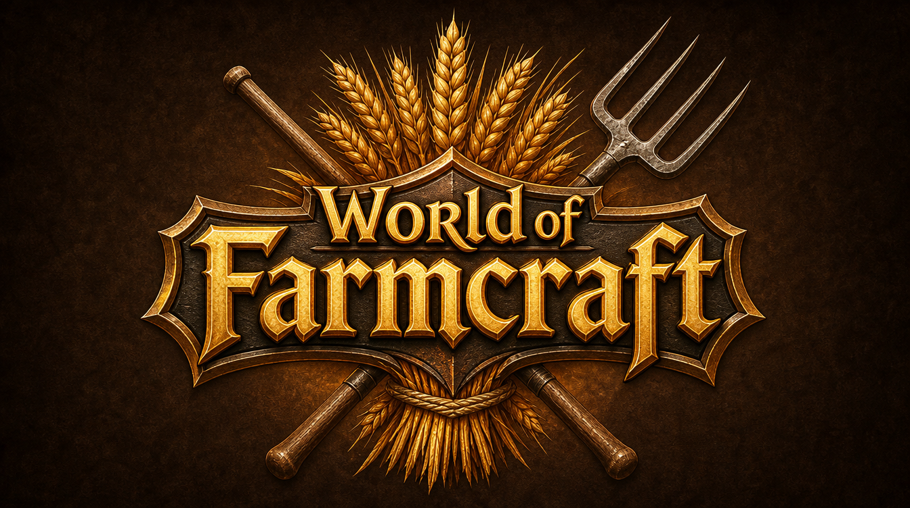
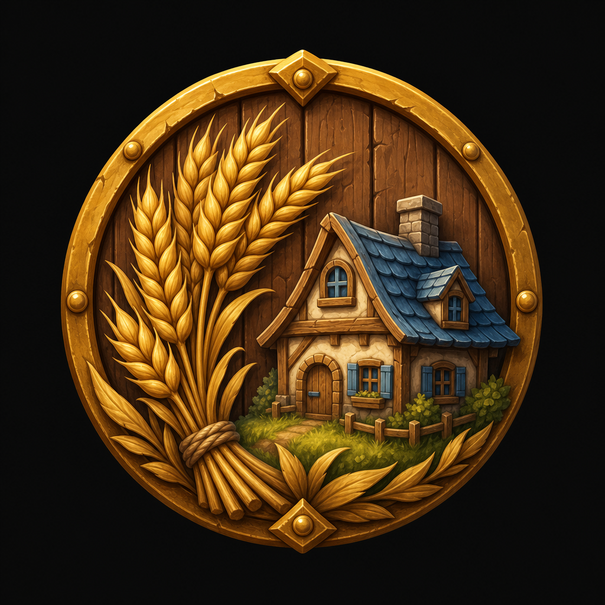
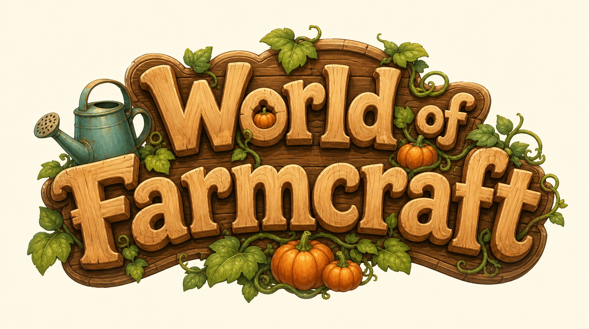
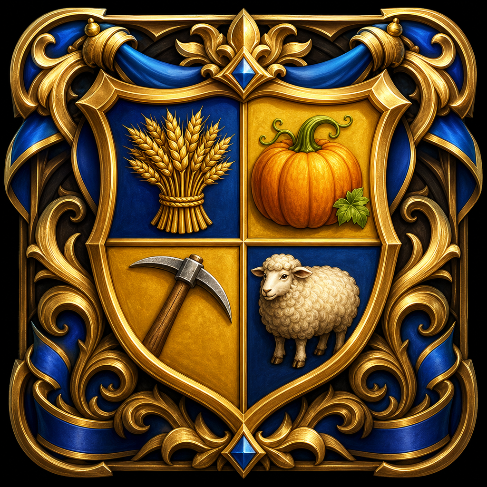
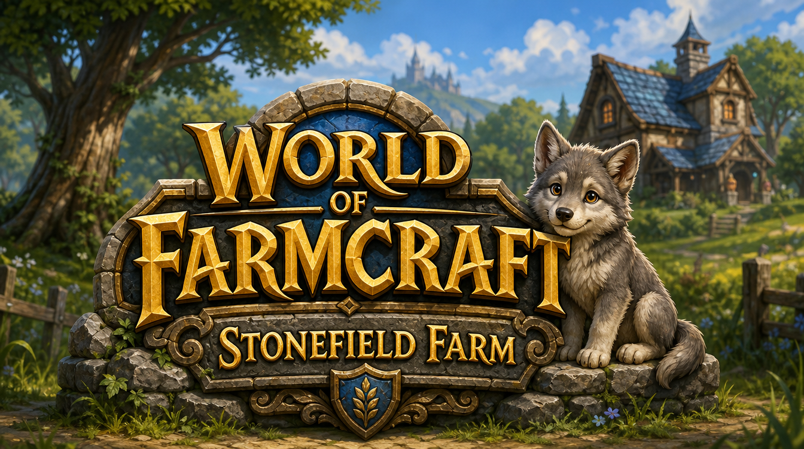
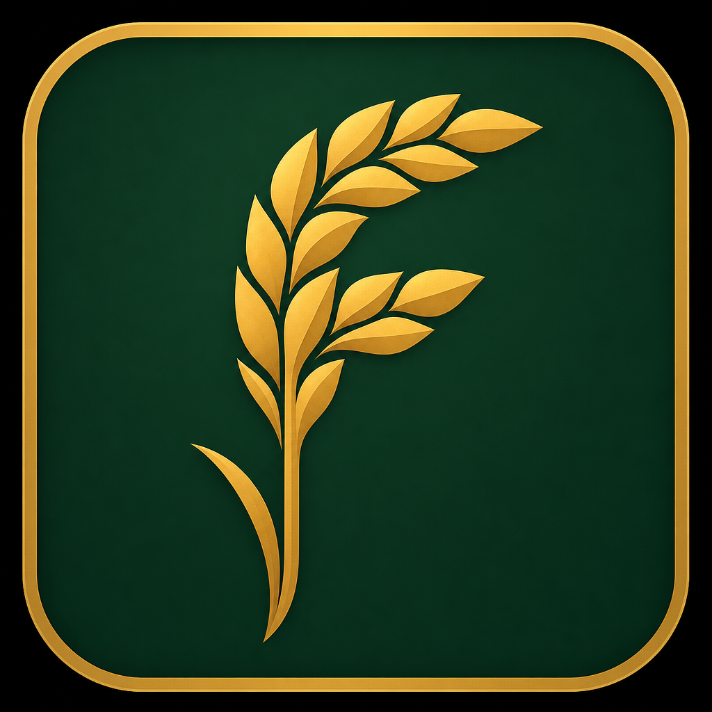
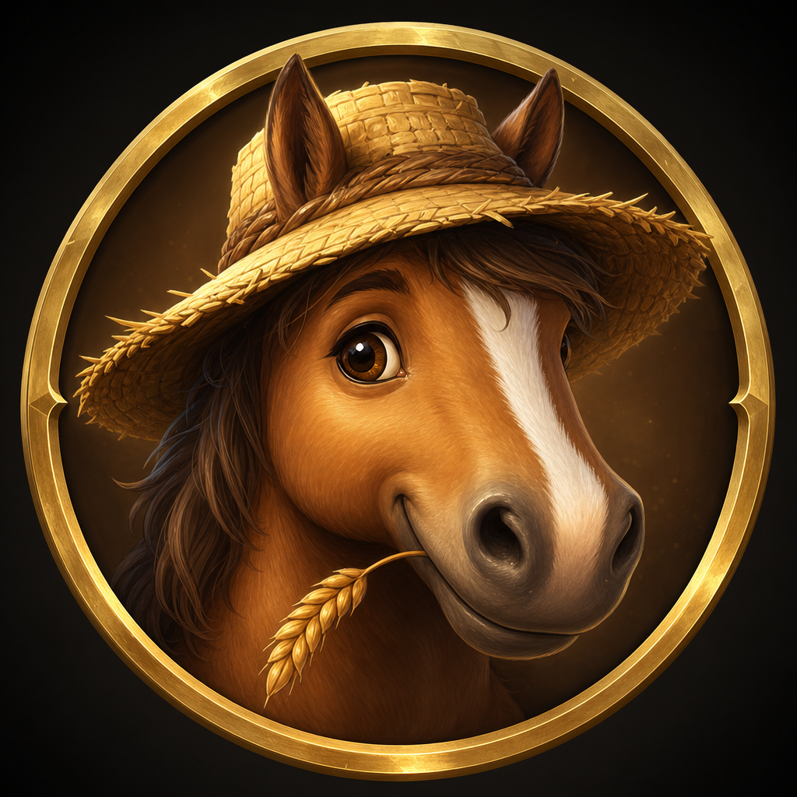
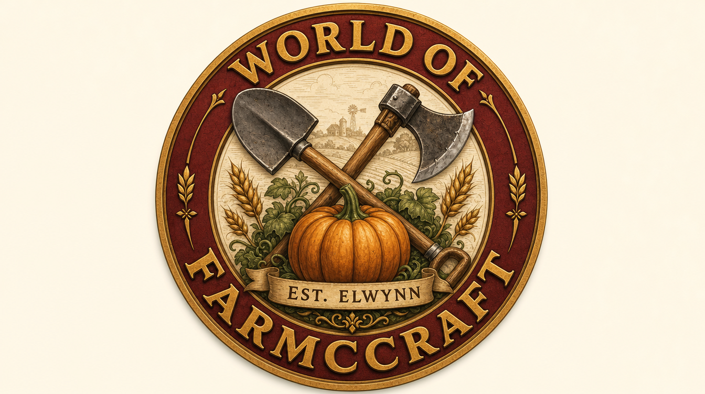
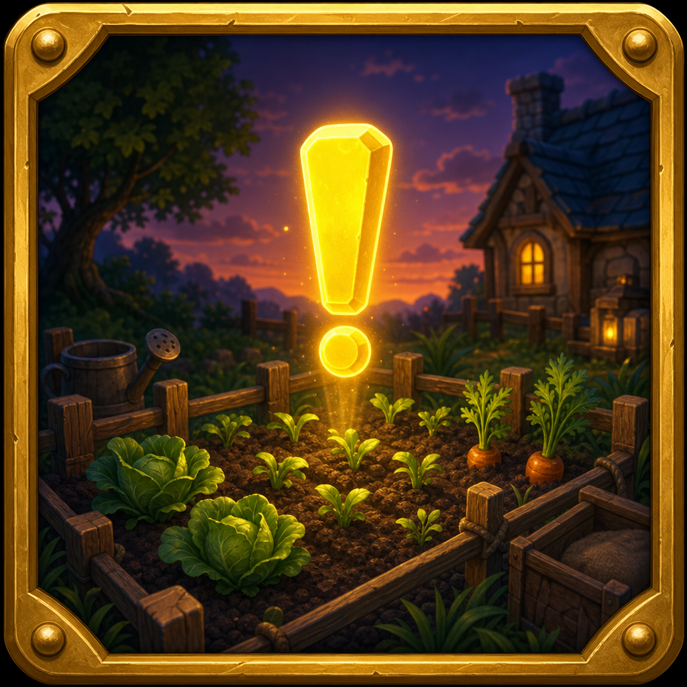
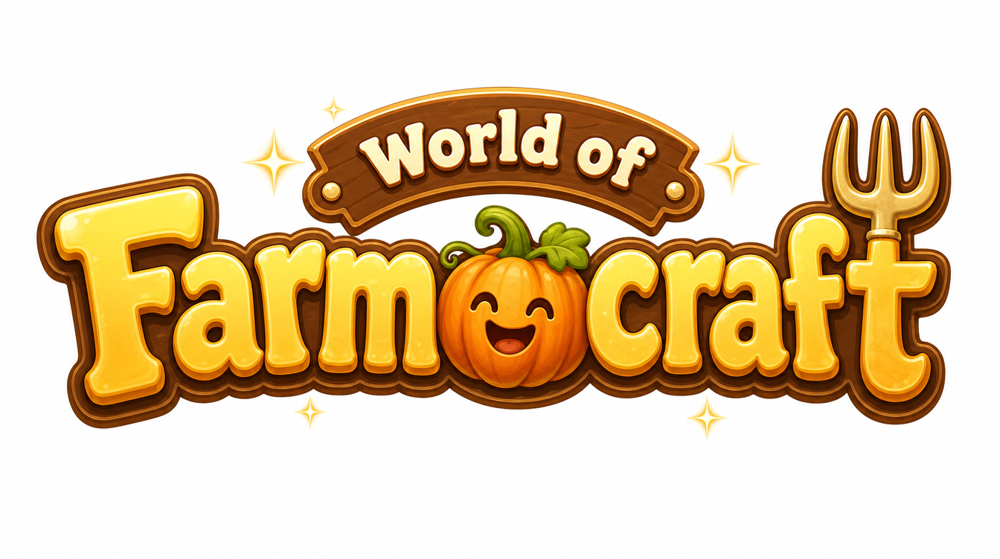

Tap a picture to see it full size. Wide ones are title logos; square ones are app icons.

Classic fantasy-MMO gold letters on a dark shield, wheat sheaf and crossed pitchfork.

Round wooden shield with a wheat sheaf and the blue-roofed farmhouse.

Storybook wooden letters, vines, pumpkins and a watering can. The coziest one.

Heraldic shield split four ways: wheat, pumpkin, pickaxe, sheep. Farming, mining and animals in one.

Gold title on a stone plinth with the wolf pup, the farmhouse and a castle on the hill.

Minimal: a golden wheat stalk shaped like an F on forest green. Works tiny.

The farm horse in a straw hat, chewing wheat. A mascot icon.

Round red and gold badge: shovel and axe over a pumpkin, "Est. Elwynn" ribbon. Note: the AI misspells the curved name ("Farmccraft"); the lettering would be redone by hand if picked.

A glowing yellow quest "!" over a garden plot at dusk. Says "WoW quests, but farming".

Bright, bubbly cozy-game letters with a smiling pumpkin and a pitchfork "t". Note: the pumpkin adds an "o" (reads "Farmocraft").